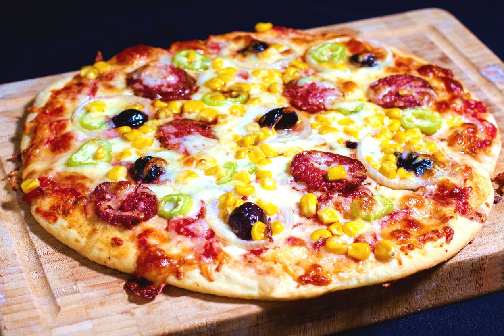

Pizza Tarifi

Malzemeler
- 5 su bardağı un
- Yarım paket yaş maya
- 1 yemek kaşığı toz şeker
- Yarım yemek kaşığı tuz
- 4 yemek kaşığı zeytinyağı
- 2 su bardağı ılık su
Sosu için;
- 2 su bardağı domastes sosu
- 2 yemek kaşığı zeytinyağı
- 1 çay kaşığı kuru fesleğen
- 1 çay kaşığı kekik
Üzeri için;
- Mozarella peyniri
- Kaşar peyniri
- Sucuk
- Sosis
- Domates kurusu
- Mantar
- Mısır
Yapılışı
- Unu yoğurma kabına alalım ve ortasını havuz şeklinde açalım.
- Unun ortasına instant maya, şeker, tuz, zeytinyağı ve ılık suyu yavaş yavaş ilave ederek hamurumuzu yoğurmaya başlayalım. İnstant maya yerine yarım paket yaş mayada kullanabilirsiniz.
- Yumuşak kıvamlı ele yapışmayan bir hamur elde edelim.
- Toparlanan hamurumuzun üzerini streç film örterek yaklaşık 30 dk kadar mayalanmaya bırakalım.
- Mayalanan hamurun üzerini açalım ve un serptiğimiz tezgaha hamuru alalım.
- Elimizle yine toparlayıp havasını aldıktan sonra 2 eşit parçaya bölelim. Eğer ince hamurlu pizza hazırlamak istiyorsanız aynı hamuru 3 parçaya da bölebilirsiniz.
- Kestiğimiz parçayı beze haline getirerek un serptiğimiz tezgahta merdane yardımıyla açalım. Hafifçe un serperek merdaneye yapışmamasını sağlayabilirsiniz.
- Açtığımız hamuru pizza tepsisine almadan önce boyutu uygun mu diye kontrol edelim.
- Açtığımız hamuru unladığımız pizza tepsisine alalım ve elimizle etrafını düzeltelim.
- Dilerseniz normal fırın tepsisine pişirme kağıdı sererek veya altına mısır unu serperek de hazırlayabilirsiniz.
- Bir çatal yardımıyla hamurumuzun tüm yüzeyine delikler açalım böylelikle hamur pişerken kabarmayacaktır.
- Pizza tepsisini önceden ısıttığımız 200° fırına sürerek hamurumuzu 10 dk pişirelim.
- Hamurumuz pişerken pizzanın sosu için domates sosu, zeytinyağı, kuru fesleğen ve kekiği ekleyerek güzelce karıştıralım.
- Yarı pişen hamurumuzu fırından alıp hazırladığımız sosu üzerine bolca sürelim. Kenarlarına doğruda güzelce sürersek kenarlarıda daha güzel kızaracaktır.
- Domates sosunun üzerine bolca mozzarella peyniri rendesi veya kaşar peyniri rendesini yerleştirelim.
- Üzerine tercihe göre dilimlenmiş sucuk, dilimlenmiş sosis, domates kurusu,dilimlenmiş mantar ve mısır tanelerini ekleyelim.
- Son olarak pizzamızı tekrar fırına sürelim ve 200° fırında 20 dk daha pişmeye bırakalım.
- Peynirleri güzel bir şekilde eriyen sucukları sosisleri gayet nefis bir şekilde pişen pizzamız servise hazır. Afiyet olsun :)